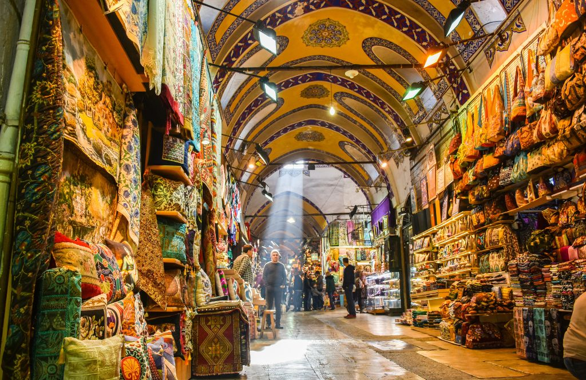

Nightlife
After sunset, Istanbul changes pace. There are quiet dinners, lively neighbourhoods, rooftops, music venues, meyhane tables and late-night streets.
Istanbul After Dark
Nightlife in Istanbul is not one single scene. It can mean a rooftop dinner, a meyhane evening, live jazz, a neighbourhood bar, a Bosphorus view, late-night food or a quiet walk through illuminated historic streets.
Neighbourhoods With Different Personalities
Beyoğlu
İstiklal, side streets, historic passages, bars, restaurants, music and theatres create a dense evening scene.
Karaköy & Galata
Contemporary restaurants, rooftops, cocktails and creative venues close to the waterfront.
Kadıköy & Moda
Local bars, music venues, cafés and late-night neighbourhood energy on the Asian side.
Beşiktaş
A lively local area with restaurants, bars and easy access to the Bosphorus.
Ortaköy
Waterfront dining and evening views beneath the Bosphorus Bridge.
Rooftops
For skyline views, look toward rooftops around Sultanahmet, Galata and the Bosphorus.
Meyhane Culture
Meyhane evenings are usually about food, conversation and time rather than rushing from venue to venue. Official tourism guidance highlights meyhane traditions in several neighbourhoods, including Beyoğlu, Kadıköy/Moda, Yedikule and Çengelköy.
Choose the Evening You Actually Want
- Quiet: sunset, dinner and a Bosphorus view.
- Social: meyhane, shared plates and music.
- Music: check current concert and venue programmes.
- Late night: Kadıköy, Moda and Beyoğlu have different late-night rhythms.
Explore More of Istanbul
Want to experience Istanbul, not just read about it?
Use this guide to plan your own day, or let our concierge team help with the practical details around it.
Request Concierge →